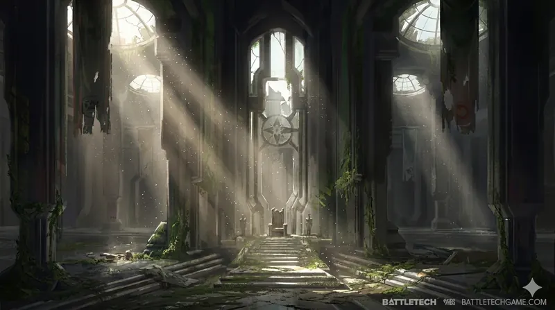

The Dark Age: When the Lights Went Out
The Jihad ended in 3081. Devlin Stone's Republic of the Sphere was established. After thirty years of continuous warfare — the Clan Invasion, the FedCom Civil War, the Word of Blake Jihad — the Inner Sphere finally had something approaching peace.
It lasted fifty years. Then the HPG network failed, and everything fell apart again.
The Republic of the Sphere (3081–3130)
Devlin Stone built the Republic on a genuinely radical idea: that the Great Houses could voluntarily disarm, pool their most strategically vital worlds into a neutral state centred on Terra, and govern themselves collectively rather than fighting over everything. The Republic encompassed seventy-two worlds in the heart of human space — the region through which all interstellar traffic passed, where the HPG network's most critical nodes sat, where Terra itself waited as the symbolic prize every faction had spent centuries fighting over.
Stone's disarmament programme was the most ambitious political project in BattleTech history. He convinced — through diplomacy, incentives, and the exhaustion of a civilisation that had been at war for thirty years — the Great Houses to demilitarise their Republic-zone territories. 'Mechs were mothballed. Regiments were disbanded. The Knights of the Republic, Stone's elite military force, maintained order with a fraction of the forces that had previously been needed.
The Republic worked because everyone was exhausted. The Jihad had killed billions, destroyed industrial capacity that had taken generations to build, and left every major faction weakened. Stone's pitch — peace, stability, and a share in Terra's symbolic legitimacy — found willing ears precisely because the alternative was more of what everyone had just survived.
The Republic era produced genuine recovery. Population rebuilt. Industry expanded. Technology continued advancing — the experimental systems of the late Jihad era became standard production. Catalyst's sourcebooks describe the Republic period as the closest the Inner Sphere had come to the Star League's golden age since the Amaris coup.
But the Republic had a structural vulnerability nobody fully addressed: it depended entirely on the HPG network functioning.
The HPG Blackout (3132)
On 7 August 3132, the HyperPulse Generator network — the interstellar communication system that allowed near-instant messaging across light-years — began failing simultaneously across hundreds of worlds. Within weeks, roughly eighty percent of all HPG stations had gone dark.
Nobody knew why. Nobody knew who was responsible. The leading theories included deliberate sabotage by a hidden faction, a cascading technical failure in ageing equipment, or something more exotic. The Republic's intelligence services investigated for years without definitive conclusions.
What the blackout meant practically was catastrophic. Interstellar coordination became nearly impossible. Worlds that had depended on HPG communication for trade coordination, military orders, and political governance were suddenly isolated. The Republic's political structures, which depended on rapid communication between distant member worlds, began breaking down immediately.
The HPG network had been taken for granted for over three centuries. ComStar had operated it through the Succession Wars, the Clan Invasion, and the Jihad. It had survived everything. The assumption that it would always function was so deeply embedded that nobody had built adequate contingency systems for its absence. When it failed, the Inner Sphere discovered just how dependent it had become.
The Clans, operating in the former occupation zones, found themselves cut off from their home clusters. The Great Houses, their forces dispersed across Republic territory under the disarmament agreements, scrambled to reconstitute military power. Mercenary companies suddenly found their contracts voided as employers could no longer communicate orders or payment. Piracy surged as enforcement became impossible across vast stretches of space.
The Fortress Republic (3135)
Exarch Jonah Levin made a desperate decision in 3135. Levin wasn't Stone's successor; that was Damien Redburn, who took the seat in 3130 and governed through the blackout itself before calling for his own replacement amid the mounting crisis. Levin, elected third Exarch by the Council of Paladins, inherited a Republic already coming apart. The Republic contracted. Levin withdrew Republic forces from the outer ring of member worlds, concentrating everything behind a line of heavily fortified systems closer to Terra. This "Fortress Republic" strategy abandoned dozens of worlds to whatever fate awaited them but preserved a defensible core around Terra itself.
The abandoned worlds didn't wait quietly. Some were absorbed by Great House forces moving in to fill the vacuum. Some declared independence. Some fell to criminal organisations or warlords. The carefully constructed political architecture of the Republic era collapsed within years of the blackout.
The Great Houses had been champing at the bit since Stone's disarmament programme. The blackout gave them their opportunity. Armies came out of mothballs. Regiments were reconstituted from veterans who had kept themselves ready. The Succession Wars-era pattern of territorial warfare resumed — but now fought with technology that had continued advancing through the Republic era, on a political map dramatically reshaped by Stone's experiment.
The New Factions
The Dark Age produced political configurations that would have been unrecognisable in 3025. The old Great House map had been scrambled by decades of warfare, alliance, and the Republic's redistribution of territory.
The Rasalhague Dominion — formerly the Free Rasalhague Republic, absorbed by Clan Ghost Bear during the Clan Invasion and transformed into a hybrid Clan/IS society. By the Dark Age the Dominion had developed a genuine political identity distinct from either its Clan or IS roots — arguably the most successful integration of Clan and Inner Sphere culture in BattleTech history.
The Jade Falcon Occupation Zone — Clan Jade Falcon had retained its territory from the Clan Invasion and continued its hardline Crusader approach. Under Khan Malvina Hazen, a warrior of exceptional brutality even by Clan standards, the Falcons would pursue a campaign of deliberate atrocity against civilian populations — tactics so far outside Clan honour doctrine that even other Clans condemned them.
The Wolf Empire — Clan Wolf, under Khan Alaric Ward, made the most dramatic territorial gains of the Dark Age period, seizing worlds from multiple Great Houses and establishing a genuine empire within the Inner Sphere rather than an occupation zone. Alaric Ward is one of the most significant figures of the era — ambitious, politically sophisticated, and operating with a long-term vision that extended well beyond the immediate territorial gains.
The Capellan Confederation — House Liao used the chaos of the Dark Age to claw back territory lost in the Fourth Succession War and subsequent conflicts. Chancellor Daoshen Liao prosecuted this campaign with considerable success, leveraging the HPG blackout's disruption of Federated Suns coordination.
The Knights of the Republic
Stone's Knights of the Republic were his elite military force — highly trained, equipped with advanced technology, personally loyal to the Republic's ideals rather than to any Great House. During the Republic era they had maintained order with relatively small numbers. After the blackout they became the Republic's primary military instrument, fighting holding actions across a collapsing frontier.
Individual Knights became significant figures in the Dark Age narrative — warriors trying to hold together a political project that was disintegrating around them, fighting for ideals in a universe that had reverted to the pragmatic violence of the Succession Wars era. The Dark Age sourcebooks and novels follow several of these figures in detail.
Why the Dark Age Divides the Fandom
The Dark Age is the most controversial era in BattleTech's publishing history, and that's saying something given the Jihad. It was introduced through a collectible miniatures game called MechWarrior: Dark Age (later Age of Destruction) that ran from 2002 to 2008, which meant the lore was developed through that game's requirements rather than through the traditional sourcebook process.
The complaints from longtime fans are legitimate: the HPG blackout as a plot device was convenient to the point of feeling contrived, resetting the Inner Sphere to a more primitive communication state to justify the clix game's scenarios. Some beloved factions were diminished or transformed in ways that felt arbitrary. The tone was darker and more morally ambiguous than earlier eras in ways not everyone welcomed.
The defence is equally legitimate: the Dark Age produced genuinely interesting political complexity, some of the best character-driven fiction in the BattleTech line, and set up the ilClan era's resolution of storylines that had been running since the Clan Invasion. The Rasalhague Dominion as a concept is fascinating. Alaric Ward is a compelling antagonist-protagonist. Malvina Hazen is genuinely disturbing in a way that serves the story.
It's worth engaging with on its own terms rather than dismissing it because it changed things you liked.
Continue Reading: The ilClan Era → · The Jihad · Lore Overview